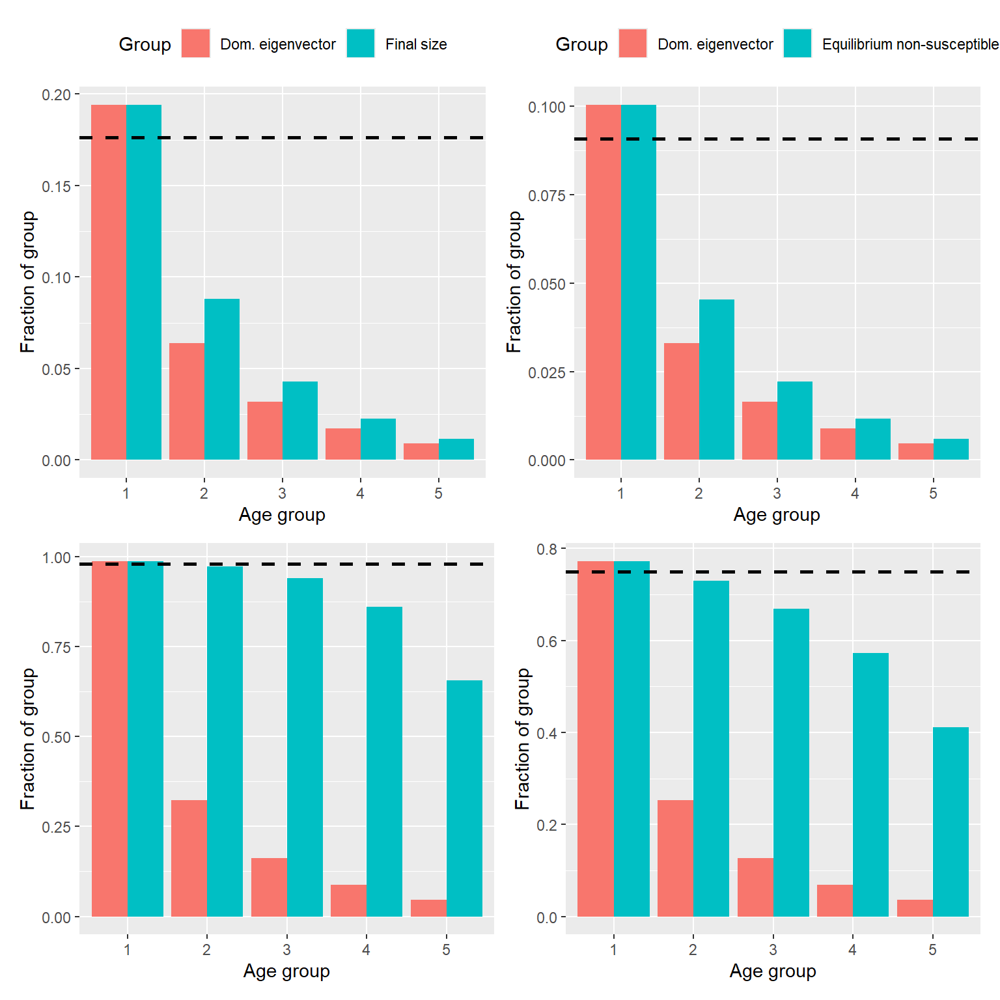
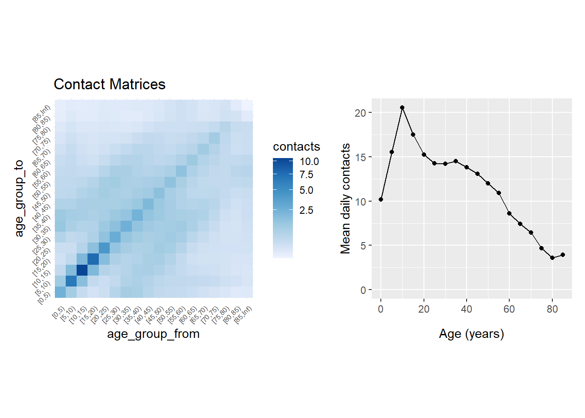
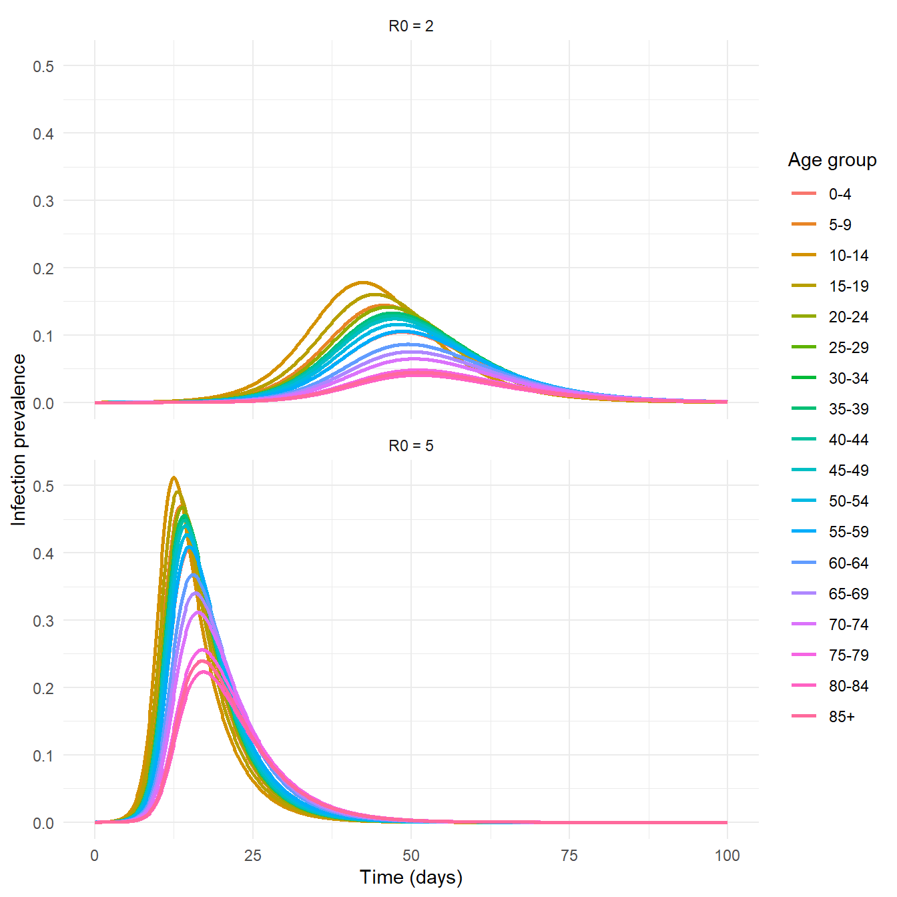
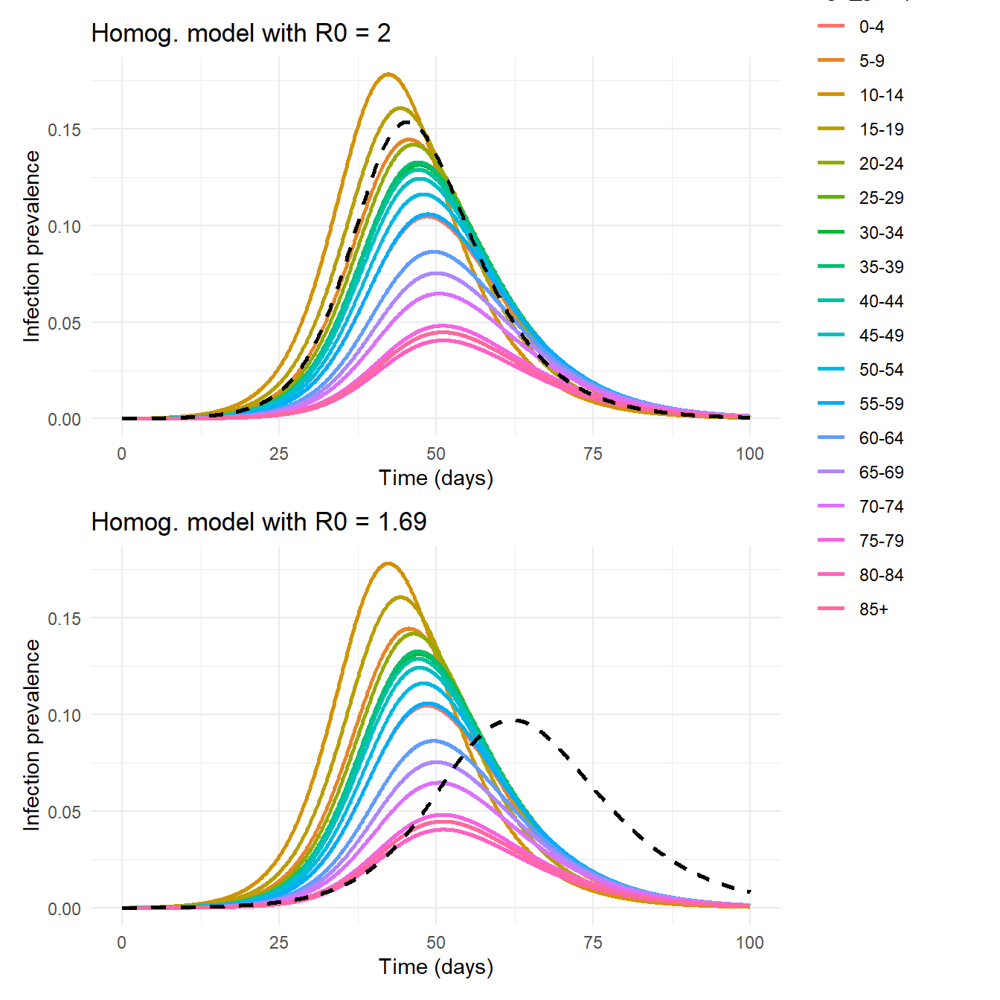

[,1] [,2] [,3] [,4] [,5]
[1,] 6.450 0.3750 0.30 0.2250 0.150
[2,] 0.375 5.3125 0.25 0.1875 0.125
[3,] 0.300 0.2500 4.20 0.1500 0.100
[4,] 0.225 0.1875 0.15 3.1125 0.075
[5,] 0.150 0.1250 0.10 0.0750 2.050Topic 11. Age-structured models
\[ \newcommand{\vect}[1]{\boldsymbol{\mathbf{#1}}} \newcommand{\R}{\mathcal{R}} \newcommand{\Reff}{\mathcal{R}_\mathrm{eff}} \]
1 Motivation
Most of the models we have seen far have assumed that the population consists of individuals who are a priori identical. In reality, individuals differ in many ways that affect their likelihood of being exposed to and transmitting an infectious disease. Age is a particularly important variable for several reasons:
- Average contact rates often depend on age.
- Individuals tend to mix more with other individuals of a similar age (this is called assortative mixing).
- Age is often a key determinant of downstream outcomes of infection, e.g. risk of hospitalisation or death. These may be important modelling targets in themselves, and they may also be important from a model fitting point of view because observed data do not typically capture all infections, only those that result in some kind of contact with the healthcare system.
- Because people may accumulate exposures to a disease over their lifetime, age is often correlated with immune status. For example, for a disease that confers lifelong immunity, it is likely that susceptibles are heavily concentrated in the youngest part of the population.
In the simplest possible age-structured model, we could assume that the population is well-mixed (i.e. contacts are independent of age), closed (i.e. no births or deaths) and initially fully susceptible. However, this would result in transmission dynamics being the same is an a non-age-structured model. For the model behaviour to be affected by age, we need to consider either an non-closed population, or some age-specific contact patterns. We will begin by looking at the first of these.
2 Homogeneous mixing
These sections are based heavily on parts of Ch. 4-5 of Anderson and May. The models analysed here are particularly relevant for vaccine-preventable diseases that are endemic or were endemic prior to the advent of mass vaccination. These include measles, rubella, mumps, pertussis, diphtheria, and polio for example.
2.1 Demographics
Suppose that births occur at rate \(b\) per unit time, and non-disease-related deaths at age \(a\) occur at per capita rate \(\mu(a)\) per unit time. This defines a survival function \(l(a)\), which is the fraction of people who survive to at least age \(a\) \[ l(a) = \exp\left( -\int_0^a \mu(a') da' \right) \]
and an average life time (i.e. life expectancy) \(L\) given by \[ L=\int_0^\infty l(a) da \]
We will consider two mortality functions \(\mu(a)\) for which the transmission model is more tractable.
NoteTypes of mortality function
- Type I mortality: individuals live to a fixed age \(L\). This is modelled by \(\mu(a)=0\) for \(a<L\) and \(\mu(a)=\infty\) for \(a>L\), and the survival function is \(l(a)=1\) for \(a<L\) and \(l(a)=0\) for \(a>L\).
- Type II mortality: individuals experience a constant mortality rate \(\mu(a)=\mu\) independent of age. This has survival function \(l(a)=e^{-\mu a}\) and the life expectancy is \(L=1/\mu\).
Type I mortality is a reasonable approximation for human populations in developed countries. Developing countries where mortality is often relatively high at young ages may be intermediate between types I and II.
Now let \(N(a,t)\) denote the number of people of age \(a\) at time \(t\). Strictly speaking, \(N(a,t)\) is not a dimensionless number but a density per unit age with dimensions \(T^{-1}\), i.e. \(N(a,t) \delta a\) is the number of people in the age bracket \([a,a+\delta a]\) at time \(t\).
Because people age steadily over time, we obtain a partial differential equation (PDE) model for the dynamics of \(N(a,t)\) \[ \frac{\partial N}{\partial t} = -\frac{\partial N}{\partial a} - \mu N \tag{1}\] This models the ageing and mortality processes. Births are included via a boundary condition \(N(0,t)=b\).
If we want to model a population whose total size is constant, we set the birth rate \(b\) so that it balances the total death rate: \[ b = \int_0^\infty \mu(a)N(a) da \]
For both type I and type II mortality functions, this implies that \(b=\bar{N}/L\) where \(\bar{N}\) is the total population size.
Thus we end up with the equilibirum population \[ N(a) = \frac{\bar{N}}{L} l(a) \]
For type I mortality, this is a uniform age distribution up to age \(L\). For type II mortality it is an exponential age distribution with mean age \(L\).
2.2 Transmission dynamics
We saw in Topic 5 that including births and deaths in a SIR model leads to an endemic state when \(\R_0>1\) because births provide a steady stream of new susceptibles. Now, however, we need to consider the fact that disease status (e.g. \(S\), \(I\) or \(R\)) will be correlated with age: newborn individuals are assumed to be initially susceptible, while the likelihood of remaining susceptible will tend to decrease with age.
Suppose that contacts occur independent of age, i.e. the probability that individual \(i\) contacts individual \(j\) per unit time is some constant \(c/\bar{N}\), regardless of the ages of \(i\) and \(j\). As before, suppose that contact between a susceptible and an infective leads to transmission with probability \(p\) and let \(\beta=cp\).
Analogously to the notation for \(N(a,t)\) above, we use \(S(a,t)\), \(I(a,t)\) and \(R(a,t)\) to represent the number of susceptible, infectious and recovered individuals respectively who are age \(a\) at time \(t\).
The ageing and mortality processes modelled in Equation 1 apply to each of \(S\), \(I\) and \(R\). Combining these with the standard SIR transmission dynamics, we obtain the following system of PDEs (for more details see Anderson and May).
NoteAge-structured PDE SIR model
\[ \begin{align} \frac{\partial S}{\partial t} &= -\frac{\partial S}{\partial a} - (\lambda + \mu) S \\ \frac{\partial I}{\partial t} &= -\frac{\partial I}{\partial a} + \lambda S - (\gamma+\mu) I \\ \frac{\partial R}{\partial t} &= -\frac{\partial R}{\partial a} + \gamma I - \mu R \end{align} \tag{2}\] where \(\lambda\) is the force of infection, which is defined as \[ \lambda(t) = \frac{\beta}{\bar{N}} \int_0^\infty I(a',t) da' \]
To model birth of susceptibles are rate \(b=\bar{N}/L\), we have the boundary conditions \[ S(0,t) = \frac{\bar{N}}{L}, \qquad I(0,t)=0, \qquad R(0,t)=0, \qquad \textrm{for } t\ge 0 \]
Note: in this simple model where the population is assumed to be well-mixed, the force of infection \(\lambda\) is the same for all ages and depends only on the fraction of the population that is infectious at time \(t\).
If we wish to find time-dependent solutions, this system of PDEs needs to be coupled with an initial condition for \(S(a,0)\), \(I(a,0)\) and \(R(a,0)\). For example, we could choose an initial condition where the overall age distribution is at equilibrium \(N(a)=\bar{N}l(a)/L\) and we introduce a small fraction \(\epsilon\) of infectious individuals at all ages: \[ S(a,0) = (1-\epsilon) \frac{\bar{N}}{L}l(a), \qquad I(a,0) = \epsilon \frac{\bar{N}}{L} l(a), \qquad R(a,0)=0, \qquad \textrm{for } a\ge 0 \]
Note that if we calculate the total initial population size we get \(\int_0^\infty \left(S(a,0)+I(a,0)+R(a,0)\right) da = \bar{N}\) as required.
3 Homogeneous mixing model equilibrium
At equilibrium, the system of PDEs in Equation 2 reduces to a system of ODEs for \(S(a)\), \(I(a)\) and \(R(a)\): \[ \begin{align} \frac{dS}{da} &= - (\lambda+\mu) S \\ \frac{dI}{da} &= \lambda S - (\gamma+\mu) I \end{align} \] where we have omitted the ODE for \(R(a)\) since it is not necessary given that we have the constraint \(S(a)+I(a)+R(a)=N(a)\).
With the boundary conditions above, this equilibrium system has the following solution.
NoteEquilibrium solution to the age-structured SIR model
\[ \begin{align} S(a) &= \frac{\bar{N}}{L} l(a) e^{-\lambda a} \\ I(a) &= \frac{\bar{N}}{L} \frac{\lambda}{\lambda - \gamma} l(a)\left( e^{-\gamma a}- e^{-\lambda a} \right) \end{align} \tag{3}\]
3.1 Basic reproduction number
If a fraction \(s\) of the overall population is susceptible, since the population is well-mixed, the average number of secondary infections caused by a single infectious individual is \(\R_0 s\). Hence at equilibrium, we must have \[ \R_0 s^* = 1 \] where \(s^*= \bar{S}/\bar{N}\) and we use the convention that the overbar denotes the age-aggregated total so that \(\bar{S}= \int_0^\infty S(a) da\).
This condition provides a relationship between \(\R_0\) and the equilibirum force of infection \(\lambda\) under different assumptions about the mortality rate \(\mu(a)\).
For type I mortality, it follows from the solution for \(s(a)\) in Equation 3 that \[ \bar{S} = \frac{\bar{N}}{L} \frac{1-e^{-\lambda L}}{\lambda} \] and so we obtain \[ \R_0 = \frac{\lambda L}{1-e^{-\lambda L}} \approx \lambda L \] where the approximation is good provided that \(\lambda L\gg 1\). This corresponds to the assumption that the probability of avoiding exposure to the disease over an average lifetime (\(e^{-\lambda L}\)) is negligibly small.
For type II mortality, where \(l(a)=e^{-\mu a}\), we have \[ \bar{S} = \frac{\bar{N}}{L} \frac{1}{\lambda+1/L} \] and hence \[ \R_0 = 1 + \lambda L \]
3.2 Average age at infection
In the age-structured SIR model defined by Equation 2, generally speaking individuals are born susceptible, and at some point in their lifetime become infected and then recovered. Intuitiviely, we would expect higher \(\R_0\) (and therefore higher force of infection \(\lambda\)) to result in individuals getting infected earlier in their lifetime. We can quantify this by calculating the average age \(A\) at infection.
The number of susceptibles of age \(a\) is \(S(a)\) and the number of these that get infected between age \(a\) and age \(a+\delta a\) is \(\lambda X(a) \delta a\). Hence \[ A = \frac{\int_0^\infty a\lambda S(a) da}{\int_0^\infty \lambda S(a) da} \]
For type I mortality, it follows from Equation 3 that \[ A = \frac{1 - (1+\lambda L)e^{-\lambda L}}{\lambda(1-e^{-\lambda L})} \tag{4}\]
While for type II mortality we obtain \[ A = \frac{L}{1+\lambda L} \tag{5}\]
When \(\lambda L\gg 1\), both mortality types have approximation age of infection \[ A \approx \frac{1}{\lambda} \] which is of course just the expected waiting time in the \(S\) compartment if mortality is neglected.
These results are important because they provide a way of estimating \(\R_0\) (something that is difficult to measure directly for endemic diseases in populations with pre-existing immunity) from \(A\) (something that is possible to estimate empirically).
For type II mortality, and for type I mortality in the \(\lambda L\gg 1\) regime, combining the results above gives \[ \R_0 = \frac{L}{A} \] This has a neat intuitive interpretation. Consider the type I model, where everyone lives for time \(L\). If we replace the continuously decreasing curve of age-specific susceptible fraction with a crude approximation that everyone remains susceptible up to age \(A\) and then gets infected immediately, we obtain Figure 1(a). This makes it clear that the susceptible fraction is \(A/L\) and we know that has to equal \(1/\R_0\) at equilibrium, which explains why \(\R_0=L/A\).

3.3 Relationship between the basic reproduction number and transmission parameter
The transmission parameter \(\beta\) and force of infection \(\lambda\) are related in this model via \[ \lambda =\frac{\beta}{\bar{N}}\int_0^\infty I(a) da = \beta \bar{I} \]
For type II mortality, calculating the total equilibrium number of infectives \(\bar{I}\) from Equation 3 gives \[ \bar{Y} = \frac{\mu\lambda \bar{N}}{(\gamma+\mu)(\lambda+\mu)} \] Together the two equations above give a relationship between \(\beta\) and \(\lambda\), and using \(\R_0=1+\lambda/\mu\) we obtain \[ \R_0 = \frac{\beta}{\gamma+\mu} \]
Note this is the same as the expression for \(\R_0\) derived in Topic 5 for the non-age-structured SIR with demography model
The expression for \(\R_0\) under type I mortality is more complicated, but provided \(\lambda/\gamma\ll 1\) may be approximated by \(\R_0 \approx \frac{\beta}{\gamma}\).
3.4 Immunisation
As we have previously seen in non-age structured model, vaccination may reduce the reproduction number from \(\R_0\) to \(\R_v=\R_0(1-p)\) where \(p\in[0,1]\) is proportion immunised. Note here that we are assuming that a proportion \(p\) are immunised with a 100% effective vaccine, or a proportion \(p_v\) are vaccinated and some fraction \(v_I\) are effectively immunised (i.e. an all-or-nothing vaccine) so that \(p=p_v v_I\).
As before, the infection will be eliminated if \(\R_v<1\), which requires \(p>p^*=1-1/\R_0\). But what happens if \(p<p^*\), i.e. some fraction of the population is immunised, but not enough to reach herd immunity?
To model this, suppose for simplicity that some fraction \(p\) of individuals are immunised at birth. This modifies the boundary conditions of the PDE model in Equation 2 to be \[ S(0,t) = (1-p)\frac{\bar{N}}{L}, \qquad I(0,t)=0, \qquad R(0,t)=p\frac{\bar{N}}{L}, \qquad \textrm{for } t\ge 0 \] In the long-term, this will shift the system from its original equilibrium in the absence of immunisation to a new equilibrium. The equilibrium solution for the number of susceptibles \(S(a)\) is simply the orignial solution from Equation 3, discounted by a factor of \(1-p\): \[ S(a) = (1-p)\frac{\bar{N}}{L}l(a)e^{-\lambda a} \] (noting that \(\lambda\) will be different from in the non-immunised case).
We must still have \(\R_0 \bar{S}/\bar{N}=1\) at equilibrium. For type I and type II mortality this means \[ \textrm{Type I: }\quad \R_0=\frac{\lambda L}{(1-p)(1-e^{-\lambda L})}, \qquad \textrm{Type II: }\quad \R_0=\frac{1+\lambda L}{1-p} \]
But of course, absent any biological change in the pathogen or social change in contact rates, \(\R_0\) is still the same as in the non-immunised case (remember \(\R_0\) is defined as relating to a fully susceptible population). So these equations tell us how \(\lambda\) must respond to changing values of immunisation coverage \(p\). In the type II case we see \[ \lambda = \frac{1}{L} \left( (1-p)\R_0 - 1\right) = \frac{1}{L} \R_0 (p^*-p) \] showing that \(\lambda\) decreases linearly with \(p\). The solution for the type I case cannot be rearranged to give a closed-form expression for \(\lambda\), but it is straightforward to show numerically that, like the type II case, it is a decreasing function of \(p\) that reaches \(0\) when \(p\) reaches \(p^*\) and the disease is eliminated.
The impact of immunisation of the average age at infection \(A_v\) may be calculated via Equation 4 and Equation 5. In the type II case this leads to the simple relationship \[ A_v = \frac{A}{1-p} \] where \(A\) is the average age at infection without immunisation. As before, we may interpret this relationship graphically as shown in Figure 1(b). Without immunisation, we saw that the susceptible fraction at equilibrium was \(A/L\) and we know this must equal \(1/\R_0\). Since immunisation does not change \(\R_0\), the susceptible fraction must, somewhat counterintuitively, be the same with and without immunisation!
If we suppose that, with an immunisation program in place, non-immunised individuals all acquire infection at average age \(A_v\), then we see from Figure 1(b) that the overall susceptible fraction is \((1-p)(A_v/L)\). Since this must equal to \(1/\R_0\), we obtain \((1-p)(A_v/L)=A/L\) which leads to the equation for \(A_v\) above.
TipCounterintuitive effects of immunisation
That partial immunisation of a population, at a level insufficient to reach herd immunity, increases the average age at infection is a consequential finding.
For some infections, the risk of serious illness depends heavily on the age at infection. One of the best examples of this is rubella, which is usually a relatively mild disease, but can cause serious congenital effects (called congenital rubella syndrome) when it infects during pregnancy.
Conversely, for other infections, the risk of severe illness may decline with age as children’s immunocompetence improves with age. In these cases, partial immunisation may have compounding benefits: directly protecting those who are immunised and indirectly benefiting those aren’t by delaying infection.
The net overall effect of immunisation programs depends on the interplay between several factors – vaccine effectiveness against severe disease relative to effectiveness against infection or transmission, the age of immunisation, the achievable vaccine coverage, the age-dependence of disease severity, and the demographics of the population – and is not easy to guess. This is an area where modelling is particularly useful to estimate the effects of an immunisation program under different assumptions and reveal the potential for counterintuitive or undesirable consequences.
4 Homogeneous mixing model dynamics
In the preceding sections, we have explored the equilibrium behaviour of the age-structured PDE SIR model in Equation 2. In this section, we consider its dynamics (i.e. non-equilibrium behaviour) in the special case of type II mortality (i.e. age-independent mortality rate). In this case, integrating Equation 2 over \(a\) reduces the model to a system of ODEs for the total numbers in the three disease compartments \(\bar{S}\), \(\bar{I}\) and \(\bar{R}\) compartments. We again choose the birth rate \(b\) such that total population size \(\bar{N}=\bar{S}+\bar{I}+\bar{R}\) is conserved, which means we can omit the equation for \(\bar{R}\).
NoteODE model for type II mortality
Under the assumption of type II mortality, the age-structured PDE SIR model reduces to an ODE model for the total number of susceptible individuals \(\bar{S}(t)\) and infectious individuals \(\bar{I}(t)\) of all ages: \[ \begin{align} \dot{\bar{S}} &= \mu \bar{N} - (\lambda + \mu) \bar{S} \\ \dot{\bar{I}} &= \lambda \bar{S} - (\gamma+\mu) \bar{I} \end{align} \] where the force of infection is given by \[ \lambda(t) = \frac{\beta \bar{I}(t)}{\bar{N}} \]
This is identical to the SIR model with demography we saw in Topic 5 and we will not repeat the analysis here.
5 Age-dependent mixing
The PDE model studied in the preceding sections can be generalised to accommodate age-specific contact patterns, and the resulting age-dependent force of infection \(\lambda(a,t)\). If the rate of transmission-sufficient contacts that individuals of age \(a\) have with individuals of age \(a'\) is \(\beta(a',a)\) (i.e. contacts that would result in the \(a\) individual were susceptible and the \(a'\) individual were infectious) then we obtain \[ \lambda(a,t) = \int \beta(a',a) \frac{I(a',t)}{N(a')} da' \] See Ch. 9 of Anderson and May.
We will not study this model in further detail here, but instead make the simplification of dividing the population into a finite number of discrete age groups, indexed by \(a=1,\ldots n_a\). This means that the force of infection on age group \(a\) may be expressed a summation over age groups: \[ \lambda_a(t) = \sum_{a'} \beta_{a',a} \frac{I_{a'}(t)}{N_{a'}} \]
Here \(\beta_{a',a}\) is the average number of transmission-sufficient contacts that an individual in age group \(a\) has with individuals in age group \(a'\) per unit time, and \(I_{a'}(t)/N_{a'}\) is the fraction of age group \(a'\) that is infectious at time \(t\).
Let \(C_{a',a}\) denote the average number of contacts an individual of age \(a\) has with individuals of age \(a'\), and \(p_a\) be the probability of transmission if a susceptible of age \(a\) has contact with an infective. Then \(\beta_{a',a}=p_a C_{a',a}\) and so we express the force of infection as \[ \lambda_a(t) = p_a \sum_{a'} C_{a',a} \frac{I_{a'}(t)}{N_{a'}} \]
This expression is convenient because the quantity \(C_{a,a'}\), known as a contact matrix, may be estimated from empirical social contact surveys, which ask people to keep a record of how many contacts they have with people of different ages in a defined period. The POLYMOD study from 2008 is one of the best-known examples of this. Note \(C\) must satisfy the detailed balance condition \(C_{a',a}N_{a} = C_{a,a'}N_{a'}\) seen in the previous Topic.
The PDE model in Equation 2 then becomes a system of ODEs.
NoteAge-structured ODE SIR model
Let \(S_a(t)\), \(I_a(t)\) and \(R_a(t)\) denote the number of susceptible, infectious and recovered individuals respectively in age group \(a\) (\(a=1,\ldots,n_a\)). We have the following age-structured SIR ODE model: \[ \begin{align} \dot{S_a} &= -\lambda_a S_a \\ \dot{I_a} &= \lambda_a S_a - \gamma I_a \\ \dot{R_a} &= \gamma I_a \end{align} \tag{6}\] where the force of infection is given by \[ \lambda_a(t) = p_a \sum_{a'} C_{a',a} \frac{I_{a'}(t)}{N_{a'}} \]
This formulation of the model ignores births, death and ageing, which might be reasonable if modelling an epidemic over a short timescale. Note however that it is straightforward to include these processes if required. Births generate an input term to \(S_1\) (the first age group); deaths generate an age-dependent linear loss term to all compartments; and ageing generates a linear transition rate from \(S_a\) to \(S_{a+1}\) (and similarly for the \(I\) and \(R\) compartments). This results in the following system:
\[ \begin{align} \dot{S_a} &= -\lambda_a S_a + r_{a-1} S_{a-1} + b_a - r_a S_a - \mu_a S_a \\ \dot{I_a} &= \lambda_a S_a - \gamma I_a + r_{a-1} I_{a-1} - r_a I_a - \mu_a I_a\\ \dot{R_a} &= \gamma I_a + r_{a-1} R_{a-1} - r_a R_a - \mu_a R_a \end{align} \] where \(b_a=0\) for \(a>1\) and \(1/r_a\) is the residence time in age group \(a\) (which is the simply the width of that age bracket). Students of numerical methods will recognise this as equivalent to an application of the methods of lines to the corresponding PDE model in Equation 2 with upwind differences applied to the advective \(\partial/\partial a\) terms.
Waning immunity can also be included by adding a transition from \(R_a\) to \(S_a\).
6 Age-dependent mixing model behaviour
6.1 Basic reproduction number
The basic reproduction number \(\R_0\) as we have seen previously is defined to be \(\rho(K)\), the dominant eigenvalue of the NGM \(K\), which is given by \[ K_{ij} = \frac{1}{\gamma} p_{i} C_{ij} \tag{7}\]
Note that, because the arguments and results here applies to any stratification of the population into groups (not just age-structured models), we use \(i\) and \(j\) to index the groups rather than \(a\) and \(a'\).
This expression for \(K_{ij}\) may be derived using the general recipes of Dieckmann et al. (2010) seen in the previous Topic. It may also be intuitively seen as the infectious period \(1/\gamma\), multiplied by the number of contacts \(C_{ij}\) that an individual in group \(j\) has per unit time with individuals in group \(i\), multiplied by the probability \(p_{i}\) that those contacts result in transmission.
NoteBasic reproduction number when susceptibility is independent of group
In the special case where \(p_i=p\) is the same for all groups (i.e. susceptibility is the same for all group), we have
\[ \R_0 = \frac{p}{\gamma}\rho(C) \]
Following the patterns seen in the simple two-type case in the previous Topic, increasing heterogeneity in contact rates between groups, for a given probability \(p\) of transmission per contact, tends to increase \(\R_0\). This happens because, when the population is fully susceptible, infections are concentrated in the groups that have relatively high contact rates. Increasing levels of assortative mixing amplify this effect and thus increase \(\R_0\) further.
In practice, it is often desirable to be able to specify the value of \(\R_0\), either as a scenario/sensitivity analysis or as part of calibrating the model to data. For a given contact matrix \(C\), this can be done by choosing the value of the transmission probability \(p\) to give the desired value of \(\R_0\) via the equation above.
When the fraction of group \(i\) that is susceptibles is \(s_i(t)=S_i(t)/N_i\), the next generation matrix is \[ K_{ij}(t) = \frac{p}{\gamma} C_{ij} s_{i}(t) \]
The effective reproduction number \(\Reff(t)\) is the dominant eigenvalue of this matrix.
NoteEffective reproduction number
The effective reproduction number at time \(t\) is given by
\[ \Reff(t) = \frac{p}{\gamma}\rho\left( C \odot {\bf s}(t) \right) \] where \(\odot\) denotes the Hadamard (i.e. element-wise) product and \({\bf s}(t)\) is the column vector \([s_1(t),\ldots,s_{n_a}(t)]^T\).
Clearly \(\Reff(t)=\R_0\) when \(s_i(t)=1\) for all groups, as we would expect.
6.2 Epidemic growth rate and stable age distribution
Note that Equation 6 can be written in matrix-vector form as follows
NoteSIR model in matrix-vector form
\[ \begin{align} \dot{\bf S} &= -\gamma ({\bf S/N}) \odot(K{\bf I}) \\ \dot{\bf I} &= \gamma ({\bf S/N}) \odot(K{\bf I}) - \gamma {\bf I} \\ \end{align} \tag{8}\]
Linearising around the disease-free equilibrium where \({\bf S}={\bf N}\) we obtain \[ \dot{\bf I} = \gamma K{\bf I} - \gamma {\bf I} \\ \]
We conclude that, during the phase of the epidemic where the population is almost fully susceptible, the number of infectious individuals in each group \({\bf I}\) will relax onto the dominant eigenvector of \(K\) and will grow exponentially at rate \(r= \gamma\rho(K)-\gamma = (\R_0-1)\gamma\). This is the same relationship between \(\R_0\) and \(r\) as for the unstructured SIR model seen in Topic 2.
NoteEpidemic growth rate and stable age distribution
In a fully susceptible population, the model defined in Equation 6 has epidemic growth rate \[ r = (\R_0-1)\gamma \] and the stable age distribution of new infections is the dominant eigenvector of \(K\).
6.3 Final epidemic size
Let \(z_i\) be the fraction of group \(i\) infected by the end of the epidemic (sometimes called the group-specific final attack rate). The final number of infections in group \(j\) is \(z_jN_j\), each of which exert cumulative force of infection \(K_{ij}/N_i\) on group \(i\). So the total cumulative force of infection on group \(i\) is \[ \sum_j K_{ij} \frac{z_j N_j}{N_i} \]
Hence the probability of a group \(i\) individual escaping infection is \[ 1-z_i = \exp\left(-\sum_j K_{ij} \frac{z_j N_j}{N_i} \right) \]
Writing this relationship in matrix-vector form gives the following final size equation.
NoteFinal size equation for a multi-type model
The group-specific final attack rates \({\bf z}=(z_1,\ldots,z_n)\) satisfy
\[ 1-{\bf z} = e^{ -A{\bf z} } \tag{9}\] where the matrix \(A\) is defined by \(A_{ij}=K_{ij}N_j/N_i\) (and the exponential is element-wise). Note that, in the case where susceptibility \(p_i\) is the same for all groups \(i\),the detailed balance condition implies that \(A=K^T\).
The overall fraction of the population infected is \[ \bar{z}= \frac{1}{N} \sum_i N_i z_i \]
Equation 9 is a natural generalisation of the final size equation for a homogeneous model: \[ 1-z = e^{-\R_0 z} \]
Like the homogeneous final size equation, Equation 9 does not have a closed-form solution, but can be solved numerically and generally has a unique solution with \(z_i\in[0,1]\) for all groups \(i\) when \(\R_0>1\), provided \(K\) is primitive (i.e. the epidemic can eventually reach all groups regardless of which group it is seeded in). See Andreasen (2011) for more details.
Importantly, this shows that the final group-specific attack rates are determined solely by the next generation matrix \(K\) (and the group-specific population sizes ${}) and are independent of other factors, such as the relationship between infectiousness and age-of-infection.
Although increasing heterogeneity (for a fixed average contact rate) always increases \(\R_0\) and hence means the epidemic grows more rapidly in the initial phase, it does not necessary mean it has a larger final size \(\bar{z}\) (we will see an example of this below). Because infections are initially concentrated in high-contact groups, the number of susceptibles in these groups is depleted faster than in other groups. Therefore, over time, the susceptible population is increasingly skewed towards groups with a lower contact rate.
In the next section, we will focus on some numerical examples, in the simplest version of the model that ignores demographics and waning immunity.
6.4 Waning immunity and endemic equilibrium
If we add waning immunity to the model defined by Equation 8, we obtain the SIRS model \[ \begin{align} \dot{\bf S} &= -\gamma ({\bf S/N}) \odot(K{\bf I}) + w({\bf N}-{\bf S}-{\bf I}) \\ \dot{\bf I} &= \gamma({\bf S/N}) \odot(K{\bf I}) - \gamma {\bf I} \\ \end{align} \]
At equilibrium, this must satisfy \[ \begin{align} ({\bf S/N}) \odot(K{\bf I}) &= \frac{w}{\gamma} ({\bf N}-{\bf S}-{\bf I}) \\ ({\bf S/N}) \odot(K{\bf I}) &= {\bf I} \\ \end{align} \]
This implies that \({\bf I} = \frac{\gamma}{w+\gamma}( {\bf N} - {\bf S})\) and substituting this into the second equation gives \[ \left( {\bf S}/{\bf N} \odot K \right)( {\bf N} - {\bf S}) = {\bf N} - {\bf S} \tag{10}\]
This shows that, provided this equation has a unique solution, the equlibrium susceptible population \({\bf S}^*\) is independent of \(\gamma\) and \(w\) and depends only on the NGM \(K\). This is consistent with the unstructured SIRS result where \(S^*/N=1/\R_0\) and \(I^* = \gamma/(w+\gamma)(N-S)\).
Intuitively, what is happening here is that exposure to infection (encoded by the NGM \(K\)) differs by group, which means that different groups spend different amounts of time in the \(S\) compartment before being re-infected. But once infected, the recovery and waning processes are the same for everyone, so everyone spends a fraction \(\gamma/(w+\gamma)\) of their non-susceptible time in the \(I\) compartment and the remaining time in the \(R\) compartment. These results may be summarised as follows.
TipProperties of the SIRS model endemic equilibirum
The non-susceptible fraction of each group is determined by the NGM \(K\), and is split between infectious and recovered compartments in the same ratio as that of the infectious period to the immune period.
The age distribution of infections at equilibrium \({\bf I}^*\) will generally lie somewhere between the age distribution in a fully susceptible population (i.e. dominant eigenvector of \(K\)) and a constant age distribution with \(I_i = \gamma/(w+\gamma) (1-1/\R_0)\).
We will see some numerical examples next.
6.5 Numerical example
To explore some of these ideas numerically, we investigate some of the properties of the model with five equally sized age groups. We choose the NGM to represent a population where activity level decreases with age and mixing is age-assortative. Specifically, we set the NGM \(K\) to be a scalar multiple of the following matrix
with the scalar chosen to give a desired value of \(\R_0=\rho(K)\).
We calculate the age-specific final attack rates \({\bf z}\) (for the model with permanent immunity) and The age-specific non-susceptible fraction at endemic equilibrium \({\bf 1}-{\bf S}^*/{\bf N}\) (for the model with waning immunity). These are found by solving Equation 9 and Equation 10 respectively by fixed point iteration.
Figure 2 shows the results for two different values of \(\R_0\). We observe that the age distribution of SIR final attack rates (left panels) is similar to that of the SIRS equilibrium non-susceptible fraction (right panels). when \(\R_0=1.1\) (top panels), these have have a similar distribution to the dominant eigenvector of the NGM \(K\) (i.e. the stabel age distribution of infections in a fully susceptible population). In contrast when \(\R_0=4\) (bottom panels), both distributions are substantially flattened towards the expected value for a homogeneous (i.e. not age-structured) model.
When \(\R_0\) is large enough, even the low-contact groups only spend a short time on average in the susceptible compartment before being infected. Hence, in the SIR model almost everyone gets infected, while in the SIRS model individuals are re-infected almost immediately on becoming susceptible, which means that the equilibrium prevalence is determined by maionly by the waning rate, which is independent of age.
TipDifferences in infection rates between groups
We may conclude from this that differences in infection rates between groups will be at their greatest in the early stages of an epidemic when the population is almost fully susceptible, and risk of infection is directly related to exposure. As time goes by, these differences will tend to be damped as there will be higher levels of immunity in the high-contact groups.

7 Example contact matrix
Figure 3 shows an example contact matrix for the New Zealand population, estimated using the R package conmat. This package uses contact survey data from the 2008 POLYMOD study and applies it to the New Zealand population’s 2025 age structure using five-year age bands.
Several features are visible in this contact matrix:
- Mixing is strongly age-assortative, as seen by relatively high values in the diagonal elements of the matrix.
- There are also secondary diagonals with elevated contact rates, corresponding to contacts between parents and children.
- Overall contact rates tend to be highest in the 5-20-year olds and steadily decrease with age among older adults.

Plugging this contact matrix (and associated age-specific population size data for \(N_a\)) into the SIR model defined by Equation 6 and choosing the transmission probability \(p\) to give \(\R_0=2\) and \(\R_0=5\) leads to the results shown in Figure 4. Notice the the younger age groups tend to have much higher prevalence (and higher attack rates) and than the older groups. They also peak earlier because their susceptible populations are depleted faster. As a consequence, the age-breakdown of new infections tends to shift from the high-contact (i.e. young) groups to the low-contact (i.e. old) groups as the epidemic progresses.

Figure 5 compares the age-structured model with a homogeneous model without age structure. The comparison is shown for two different choices of the parameter \(\beta\) in the homogeneous model: (a) to give the same value of \(\R_0=\beta/\gamma\) as the age-structured model; and (b) to have the same value of the per-contact transmission probability as the age-structured model and the same population-average number of daily contacts (which is around 12.5 for the contact matrix shown in Figure 3). This results in a smaller value of \(\R_0\).

The take-home message from Figure 5 is that, if we add heterogeneous contact structure to the model while holding the average rate of infectious contacts fixed, we increase the value of \(\R_0\) and hence get a faster (though not necessarily larger) epidemic. In this example, the age-structured epidemic infected 66.5% of the population, compared to 67.6% in the homogeneous model with the same rate of infectious contacts, which had \(\R_0= 1.69\) (Figure 5, bottom panel).
On the other hand, if we hold \(\R_0\) fixed, we get an epidemic that initially grows at the same speed as in the homogeneous model (by design), but typically has a smaller overall final size than the homogeneous model, which infected 79.6% of the population (Figure 5, top panel). This happens because the increase in attack rates for the high-contact rate groups (relative to the homogeneous model) is smaller than the drop in attack rates for the low-contact rate groups. The reason for this is that the relationship between contact rates and attack rates, sufficiently far away from the epidemic threshold at \(\R_0=1\), generally has a concave shape (by definition attack rates cannot exceed \(1\)).
8 Activity-structured models
We finish this Topic with a brief look at epidemic models where the population is structured not by age but by another continuous variable: contact rate (or activity level).
Simple models ignore variations in activity levels between individuals and treat the population either as a homogeneous whole or, as we have seen in this Topic, as being homogeneous within specified age groups. In reality, there is a continuous spectrum of activity levels in the population: some people have relatively low contact rates while others may be have contact rates many times greater than the mean.
Suppose the population may be ordered along a continuous spectrum \(x\) of activity level quantiles from \(x=0\) (representing the lowest activity level in the population) to \(x=1\) (representing the highest). Let \(v(x)\) denote the total number of contacts per unit time for someone at quantile \(x\) on the activity level distribution. An equivalent definition is that \(v(x)\) is the CDF of the activity level distribution.
If we assume proportionate mixing, the number of contacts per unit time that an individual at activity quantile \(x\) has with individuals in the quantile interval \([x',x'+ dx']\) is \[ \frac{v(x)v(x')dx'}{\int_0^1 v(y) dy} \] Note that the denominator \(\int_0^1 v(y) dy\) is equal to the mean activity level, which we denote \(\langle v \rangle\), and ensures the total contact rate for the quantile \(x\) individual is \(v(x)\) as required.
If we assume there is a constant probability \(p\) of transmission per contact, the force of infection \(\lambda(x,t)\) for someone at activity quantile \(x\) at time \(t\) is \[ \lambda(x,t) = p\frac{v(x)}{\langle v \rangle} \int_0^1 v(x') I(x',t) dx' \] where \(I(x,',t)\) is the density of infectives at activity quantile \(x'\) at time \(t\).
Since the population is structured by a continuous variable \(x\) as opposed to a discrete variable, we have a next generation operator rather than a next generation matrix. The operator \(K\) is defined such that if \(h(x)\) is the number of incident infections at activity quantile \(x\) at a certain time, then \(Kh(x)\) is the number of infections at activity quantile \(x\) caused by those infections in a fully susceptible population \[ Kh(x)= \frac{p}{\gamma} \frac{ v(x)}{\langle v \rangle} \int_0^1 v(x') h(x') dx' \]
We look for an eigenpair of this operator, i.e. a scalar \(\R_0\) and a function \(h^*(x)\) such that \(Kh^*(x)=\R_0 h^*(x)\) for all \(x\in[0,1]\), which requires \[ \R_0 h^*(x) = \frac{p}{\gamma} \frac{ v(x)}{\langle v \rangle} \int_0^1 v(x') h^*(x') dx' \]
Since the \(x\) dependence on both sides of this equation must be the same, we deduce that \(h^*(x)=v(x)\) (i.e. the stable fraction of new infections that occur at activity quantile \(x\) in the early epidemic phase is proportional to the corresponding activity level \(v(x)\)), and it follows that \[ \R_0 = \frac{p\langle v^2 \rangle}{\gamma\langle v \rangle} \]
In the classical case where the population is assumed to be homogeneous, everyone has activity level \(\langle v \rangle\), and so \(\langle v^2 \rangle = \langle v \rangle^2\). This implies that \(\R_0 = p\langle v \rangle/\gamma\), which equivalent to the classical result for \(\R_0\) with \(p\langle v \rangle\) playing the role of the transmission coefficient \(\beta\).
In the more general case where there is some variation in contact rates, \(\langle v^2 \rangle = \langle v \rangle ^2 + \sigma_v^2\) where \(\sigma_v^2\) is the variance in activity levels, and so we have \[ \R_0 = \frac{p\langle v \rangle}{\gamma} \left(1 + \mathrm{CV}^2 \right) \] where \(\mathrm{CV}=\sigma_v/\langle v\rangle\) is the coefficient of variation in the activity level distribution. This formula provides a correction to the classical result showing that variability in contact rates inflates \(\R_0\) by a factor of \(1+\mathrm{CV}^2\).
As we shall see in the next Topic, an equivalent result arises for network models where \(\langle v \rangle\) is the mean degree (i.e. mean number of neighbours per vertex) and \(\mathrm{CV}\) is the coefficient of variation of the degree distribution.